Unitat 6: Instal·lació d'un Servidor LAMP, phpMyAdmin, Virtual Hosts i SSL en Ubuntu
Introducció
En aquesta pràctica es documenta pas a pas la instal·lació i configuració completa d'un servidor LAMP (Linux, Apache, MySQL, PHP) en Ubuntu, la instal·lació de phpMyAdmin per a la gestió de bases de dades, la creació d'un Virtual Host per al domini gina.cat i la configuració de certificats SSL autofirmats per a connexions HTTPS segures.
Objectius
- Instal·lar Apache2, MySQL i PHP (stack LAMP)
- Verificar el funcionament de PHP
- Instal·lar i configurar phpMyAdmin
- Configurar usuaris i bases de dades a MySQL
- Crear un Virtual Host per a un domini personalitzat
- Habilitar SSL i configurar HTTPS amb certificat autofirmat
Part 1: Instal·lació del Stack LAMP (Apache + MySQL + PHP)
1.1 Instal·lació d'Apache2, MySQL i PHP
El primer pas és instal·lar els paquets principals del servidor LAMP. Obrim un terminal i executem la següent comanda:
sudo apt install apache2 mysql-server php libapache2-mod-php php-mysql -y
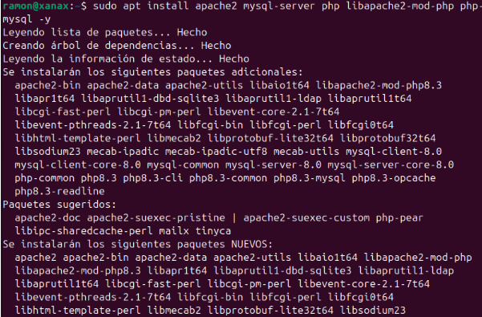
Aquesta comanda instal·la:
- apache2: El servidor web Apache
- mysql-server: El servidor de bases de dades MySQL
- php: El llenguatge de programació PHP
- libapache2-mod-php: El mòdul d'Apache per interpretar arxius PHP
- php-mysql: L'extensió de PHP per connectar amb MySQL
El sistema descarregarà i instal·larà tots els paquets necessaris i les seues dependències automàticament.
1.2 Creació d'un Arxiu de Prova PHP
Per verificar que PHP funciona correctament amb Apache, creem un arxiu info.php al directori arrel del servidor web:
echo "<?php phpinfo(); ?>" | sudo tee /var/www/html/info.php
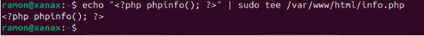
Aquesta comanda crea un arxiu PHP que mostra tota la informació de configuració de PHP quan s'accedeix des del navegador.
1.3 Verificació de PHP en el Navegador
Obrim el navegador web i accedim a la pàgina de prova PHP:
http://localhost/info.php
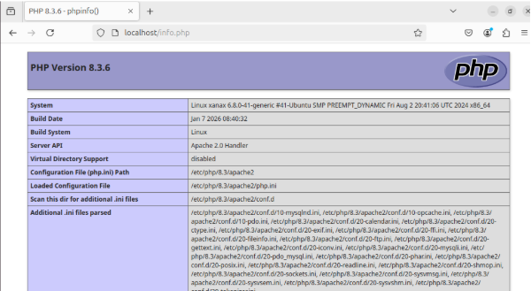
Si tot funciona correctament, veurem la pàgina de PHP Version 8.3.6 amb tota la informació de configuració del servidor:
- System: Linux xanax
- Server API: Apache 2.0 Handler
- Loaded Configuration File: /etc/php/8.3/apache2/php.ini
Açò confirma que Apache i PHP estan instal·lats i funcionant correctament.
Part 2: Instal·lació i Configuració de phpMyAdmin
2.1 Instal·lació de phpMyAdmin
phpMyAdmin és una interfície web per gestionar bases de dades MySQL. Per instal·lar-lo, executem:
sudo apt install phpmyadmin
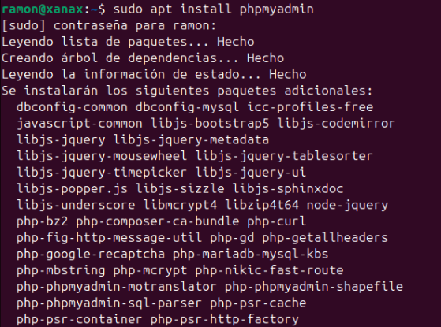
El sistema descarregarà tots els paquets necessaris per a phpMyAdmin.
2.2 Selecció del Servidor Web
Durant la instal·lació, apareix un diàleg de configuració que ens pregunta quin servidor web volem reconfigurar automàticament. Seleccionem apache2:
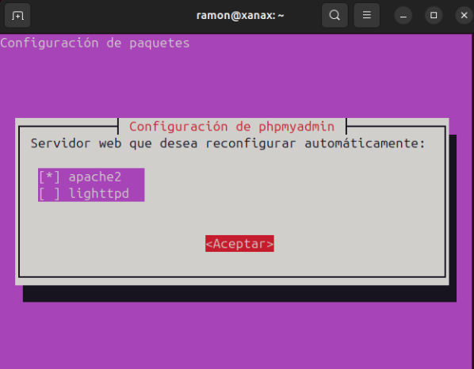
- [x] apache2
- [ ] lighttpd
Premem Acceptar per continuar.
2.3 Configuració de la Base de Dades
El següent diàleg ens pregunta si volem configurar la base de dades per a phpMyAdmin amb dbconfig-common. Seleccionem Sí:
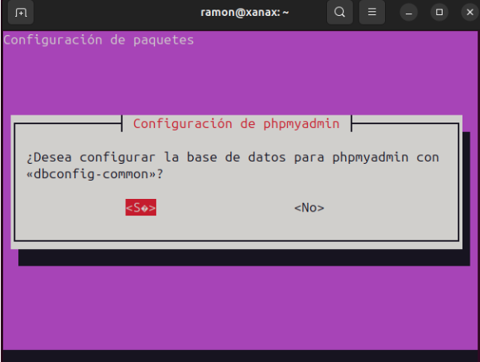
2.4 Contrasenya de phpMyAdmin
Ens demana una contrasenya per a l'aplicació MySQL de phpMyAdmin. Introduïm una contrasenya segura i premem Acceptar:
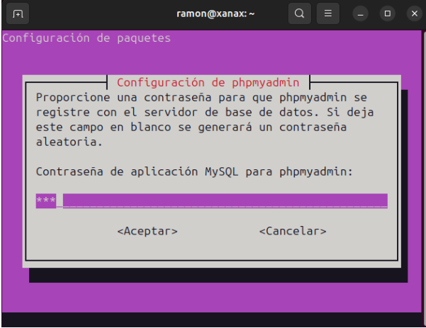
Part 3: Configuració de MySQL
3.1 Canvi de Contrasenya de l'Usuari Root
Per poder accedir a MySQL amb l'usuari root des de phpMyAdmin, canviem el mètode d'autenticació i establim una contrasenya. Accedim a MySQL:
sudo mysql
I executem la següent comanda SQL:
ALTER USER 'root'@'localhost' IDENTIFIED WITH caching_sha2_password BY '123';
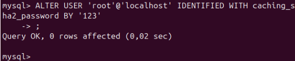
El resultat mostra Query OK, 0 rows affected, confirmant que la contrasenya s'ha canviat correctament.
3.2 Creació d'una Base de Dades i un Usuari
A continuació, creem una base de dades nova i un usuari amb permisos complets sobre ella. Executem les següents comandes SQL dins de MySQL:
CREATE DATABASE `gina.cat`;
CREATE USER 'gina'@'localhost' IDENTIFIED BY 'gina';
GRANT ALL PRIVILEGES ON `gina.cat`.* TO 'gina'@'localhost';
FLUSH PRIVILEGES;
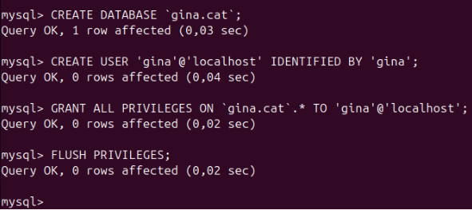
Cada comanda retorna Query OK, confirmant que:
- S'ha creat la base de dades
gina.cat - S'ha creat l'usuari
ginaamb contrasenyagina - S'han assignat tots els privilegis sobre la base de dades a l'usuari
- S'han aplicat els canvis de privilegis
Part 4: Configuració d'un Virtual Host per a gina.cat
4.1 Creació del Directori del Lloc Web
Creem el directori on es guardaran els arxius del lloc web gina.cat:
sudo mkdir -p /var/www/gina.cat/public_html
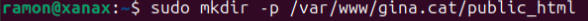
4.2 Assignació de Permisos
Assignem la propietat del directori a l'usuari actual per poder gestionar els arxius fàcilment:
sudo chown -R $USER:$USER /var/www/gina.cat/public_html/
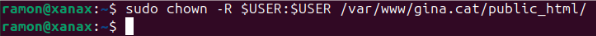
4.3 Creació de la Pàgina Web d'Inici
Creem un arxiu HTML bàsic per provar el lloc web:
echo "<h1>Benvinguts a gina.cat</h1>" > /var/www/gina.cat/public_html/index.html
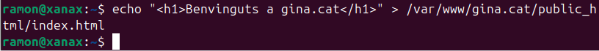
4.4 Configuració del Virtual Host d'Apache
Creem l'arxiu de configuració del Virtual Host per a gina.cat:
sudo nano /etc/apache2/sites-available/gina.cat.conf
Afegim el següent contingut:
<VirtualHost *:80>
ServerName gina.cat
ServerAlias www.gina.cat
DocumentRoot /var/www/gina.cat/public_html
</VirtualHost>
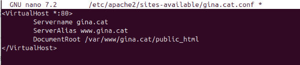
Aquesta configuració indica a Apache que:
- ServerName: El domini principal és
gina.cat - ServerAlias: També respon a
www.gina.cat - DocumentRoot: Els arxius del lloc web estan a
/var/www/gina.cat/public_html
4.5 Activació del Lloc i Recàrrega d'Apache
Habilitem el nou lloc web i recarreguem Apache perquè aplique els canvis:
sudo a2ensite gina.cat.conf
sudo systemctl reload apache2.service
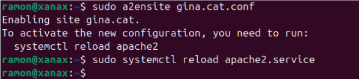
La comanda a2ensite habilita el lloc i ens indica que necessitem recarregar Apache per activar la nova configuració.
4.6 Configuració de l'Arxiu /etc/hosts
Per poder accedir al domini gina.cat des del nostre equip local, afegim una entrada a l'arxiu /etc/hosts:
sudo nano /etc/hosts
Afegim la línia:
127.0.0.1 gina.cat www.gina.cat
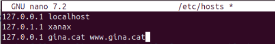
L'arxiu /etc/hosts queda amb el següent contingut:
127.0.0.1 localhost
127.0.1.1 xanax
127.0.0.1 gina.cat www.gina.cat
4.7 Verificació del Lloc Web
Obrim el navegador i accedim a http://gina.cat:
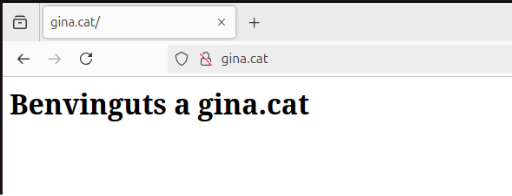
El lloc web mostra correctament el missatge "Benvinguts a gina.cat", confirmant que el Virtual Host funciona correctament.
Part 5: Configuració de SSL (HTTPS) per a gina.cat
5.1 Habilitació del Mòdul SSL d'Apache
Per podr oferir connexions HTTPS, primer hem d'habilitar el mòdul SSL d'Apache:
sudo a2enmod ssl
sudo systemctl restart apache2.service
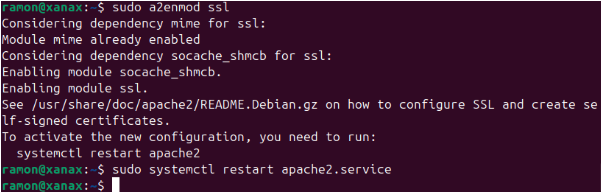
El sistema habilita el mòdul SSL i les seues dependències (mime, socache_shmcb) i ens indica que hem de reiniciar Apache.
5.2 Generació del Certificat SSL Autofirmat
Generem un certificat SSL autofirmat amb una validesa de 365 dies:
sudo openssl req -x509 -nodes -days 365 -newkey rsa:2048 -keyout /etc/ssl/private/apache-selfsigned.key -out /etc/ssl/certs/apache-selfsigned.crt
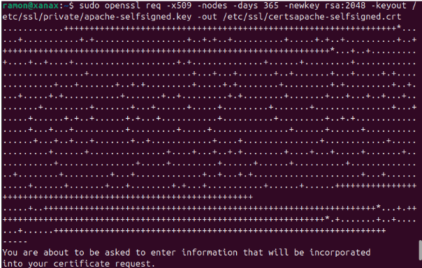
Paràmetres de la comanda:
- -x509: Genera un certificat autofirmat
- -nodes: No xifra la clau privada amb contrasenya
- -days 365: El certificat és vàlid durant 365 dies
- -newkey rsa:2048: Crea una clau RSA de 2048 bits
- -keyout: Ruta on es guarda la clau privada
- -out: Ruta on es guarda el certificat
El sistema demanarà informació com el país, organització, etc. Omplim els camps o deixem els valors per defecte.
5.3 Configuració del Virtual Host amb SSL
Editem l'arxiu de configuració del Virtual Host per afegir la configuració SSL al port 443:
sudo nano /etc/apache2/sites-available/gina.cat.conf
Afegim el bloc de configuració HTTPS:
<VirtualHost *:443>
ServerName gina.cat
ServerAlias www.gina.cat
DocumentRoot /var/www/gina.cat/public_html
SSLEngine on
SSLCertificateFile /etc/ssl/certs/apache-selfsigned.crt
SSLCertificateKeyFile /etc/ssl/private/apache-selfsigned.key
</VirtualHost>
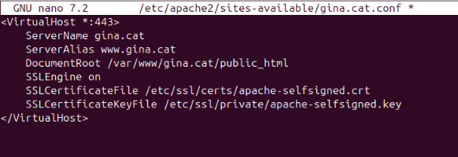
Aquesta configuració:
- SSLEngine on: Habilita SSL per a aquest Virtual Host
- SSLCertificateFile: Ruta al certificat autofirmat
- SSLCertificateKeyFile: Ruta a la clau privada del certificat
5.4 Verificació d'HTTPS
Obrim el navegador i accedim a https://gina.cat:
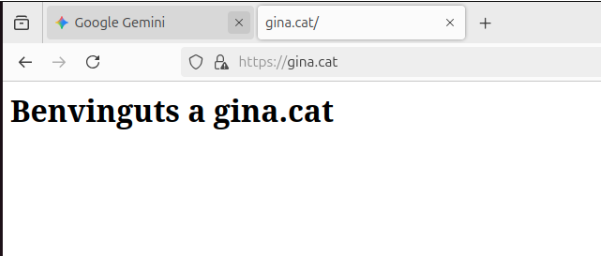
El lloc web ara és accessible de forma segura mitjançant HTTPS, mostrant el missatge "Benvinguts a gina.cat" amb el protocol https:// a la barra d'adreces.
Nota: Com que el certificat és autofirmat, el navegador pot mostrar un avís de seguretat. Aixo és normal i es pot acceptar per continuar navegant.